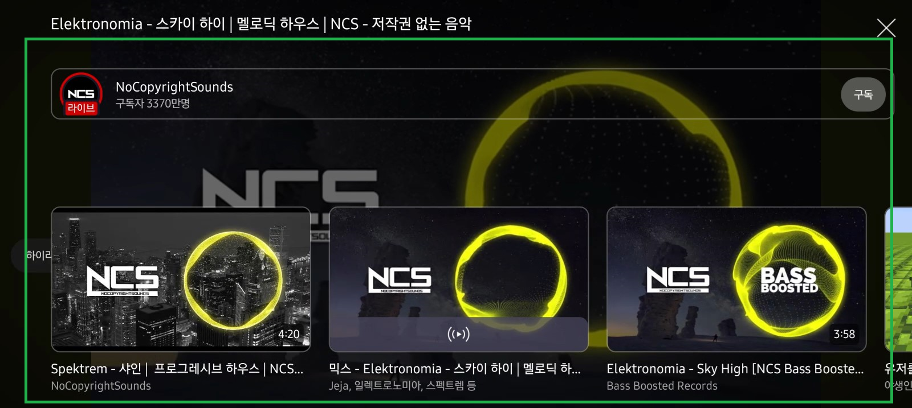
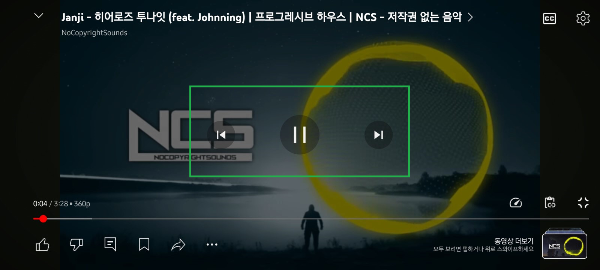
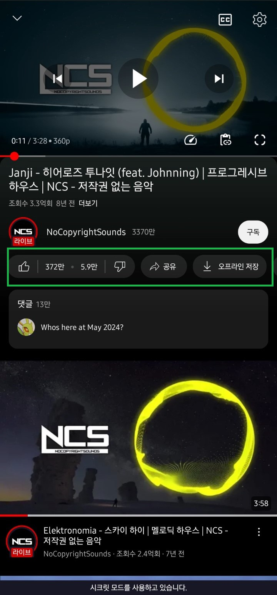
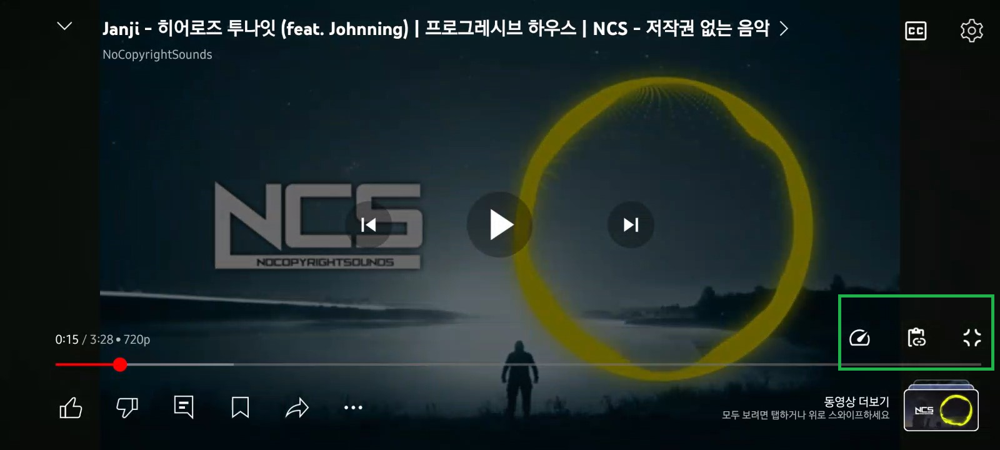
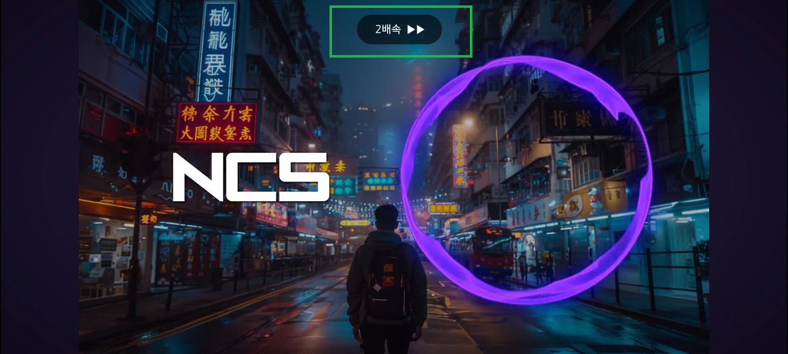
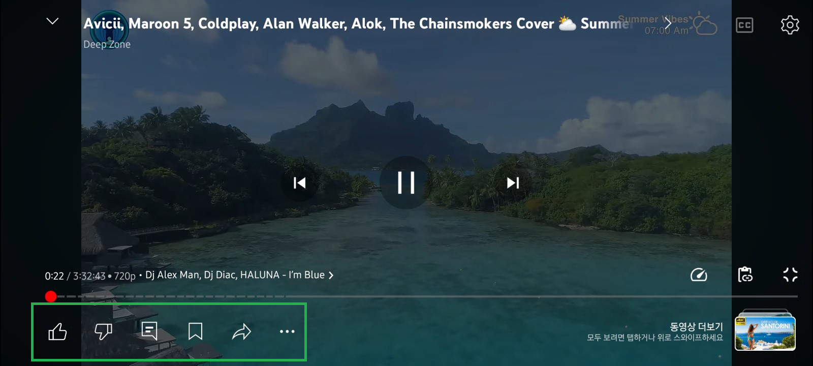

ReVanced Extended
Player
설정
목차▼
전체화면에서 위로 스와이프 했을때 뜨는게 사라졌어요.
플레이어에 이전/다음 동영상 버튼이 안떠요.
플레이어 하단에 저장, 공유, 신고가 보이지 않아요.
재생바 위에 뭔가가 생겼어요.
화면 길게 누르면 2배속이 돼요.
전체 화면 시 재생바 아래에 좋아요 싫어요 등 아이콘이 있는 거 보기 싫어요.
재생바 등을 움직일 때 느껴지던 진동이 사라졌어요.
전체화면에서 위로 스와이프 했을때 뜨는게 사라졌어요.
Revanced Extended > 플레이어 > 전체 화면 > 관련 동영상 오버레이 숨기기 > 비활성화

Show Images
플레이어에 이전/다음 동영상 버튼이 안떠요.
Revanced Extended > 플레이어 > 플레이어 버튼 > 이전 동영상 & 다음 동영상 버튼 숨기기 > 비활성화

Show Images
플레이어 하단에 저장, 공유, 신고가 보이지 않아요.
Revanced Extended > 플레이어 > 액션 버튼 > 비활성화
필요한 기능은 액션 버튼 항목에서 활성화 하세요.

Show Images
재생바 위에 뭔가가 생겼어요.
Revanced Extended > 플레이어 > 플레이어 버튼 > 오버레이 버튼 > 비활성화
필요한 기능은 오버레이 버튼 항목에서 활성화 하세요.

Show Images
화면 길게 누르면 2배속이 돼요.
Revanced Extended > 플레이어 > 동영상 재생 속도 오버레이 비활성화하기 > 활성화
이 기능을 켜면 '좌우 슬라이드하여 탐색' 동작이 복원됩니다.

Show Images
전체 화면 시 재생바 아래에 좋아요 싫어요 등 아이콘이 있는 거 보기 싫어요.
Revanced Extended > 플레이어 > 전체 화면 > 빠른 작업 > 활성화
필요한 기능은 빠른 작업에서 숨기기를 비활성화 하세요.

Show Images
재생바 등을 움직일 때 느껴지던 진동이 사라졌어요.
Revanced Extended > 플레이어 > 진동 피드백 > 비활성화
필요 없는 기능은 진동 피드백에서 비활성화를 활성화하세요.
Show Images
리밴스드 갤러리(DC):
리밴스드 갤러리로 이동
문의:
Kotlin